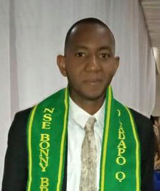

Comr. Oladapo Olumide
Financial Secretary
Engr Oladapo Olumide MNSE has a bachelor degree in Petroleum Engineering from Abubakar Tafawa Balewa University Bauchi ATBU. and is currently doing his master degree in rivers state university Port Harcourt. Rivers State he is a cooperate member of Nigerian Society of Engineers (NSE) and Society of Petroleum Engineering Specialist. He also a Lecturer in the department of Petroleum and Gas Processing Engineering Technology and the current Examination Officer of the department. He is the pioneer Financial Secretary of ASUP FPOG Bonny chapter.